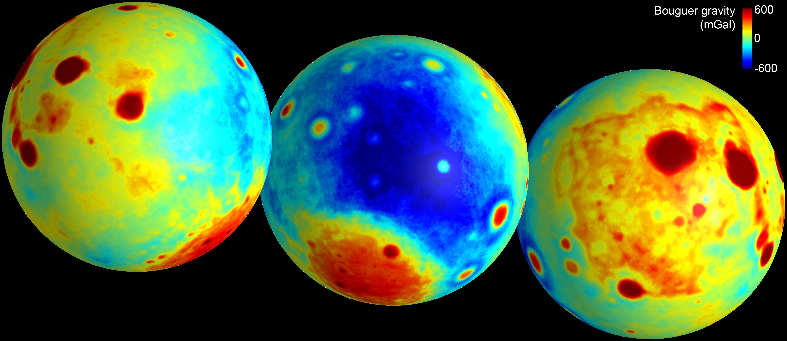

A mascon (mass concentration) is a region of a planet or Moon's crust that produces a large positive gravitational anomaly despite being associated with a topographic depression. The word "mascon" is a contraction of "mass concentration," coined by Paul M. Muller and William L. Sjogren of NASA's Jet Propulsion Laboratory in their 1968 paper in Science, in which they reported the discovery using Doppler tracking data from the five Lunar Orbiter spacecraft. The Moon is regarded as the most gravitationally 'lumpy' major body known in the Solar System.

NASA/JPL-Caltech/CSM
Under lunar conditions, a large impact crater would ordinarily be expected to show a slight negative gravitational anomaly: the depression represents missing mass, and isostasy would drive the crust toward gravitational equilibrium. Mascons defy this expectation. Two mechanisms jointly produce a positive anomaly: dense mare basaltic lava that flooded the impact basin (up to 6 km thick), and uplift of the crust–mantle boundary following the impact, which brings denser mantle material closer to the surface. All known lunar mascons are described as super-isostatic — they sit above their isostatic equilibrium positions, held there by the rigidity of the frozen lunar lithosphere. Major examples include the basins of Mare Imbrium, Mare Serenitatis, and Mare Crisium. Significantly, Oceanus Procellarum — the Moon's largest volcanic region — has no associated positive anomaly, demonstrating that lava infill alone is not sufficient; mantle rebound appears to be the minimum requirement.
Mascons have a direct and disruptive effect on low lunar orbits. The uneven gravitational field pulls spacecraft forward, backward, and sideways, destabilising orbits on timescales of months to years. The Apollo 16 subsatellite PFS-2 was expected to remain in orbit for 1.5 years but crashed into the Moon after only 35 days because it was deployed at a lower orbital inclination than planned. Only four inclination zones — 27°, 50°, 76°, and 86° — allow indefinitely stable low lunar orbits (known as frozen orbits). Before mascons were understood, positional errors in Lunar Orbiter tracking data exceeded mission specifications by a factor of 100. The mascon correction methodology, developed by William Wollenhaupt and Emil Schiesser at NASA's Manned Spacecraft Center, enabled Apollo 12 to land within 163 m of the pre-landed Surveyor 3 spacecraft in 1969.
The origin of mascons was resolved by NASA's Gravity Recovery and Interior Laboratory (GRAIL) mission (2011–2012), a pair of twin spacecraft (Ebb and Flow) that orbited as close as 25 km above the surface and could detect changes of 1 micrometre in their mutual separation. GRAIL identified 74 circular impact basins and confirmed that the mascon gravity signature follows a characteristic concentric ring structure: a central gravity surplus (the mascon itself), surrounded by a ring of deficit, surrounded by an outer ring of surplus. The results, published by Melosh et al. (2013, Science), confirmed that mascon formation is linked to the asteroid impacts of the Late Heavy Bombardment some 4 billion years ago, when the lunar interior was hotter and the Moon's crust was thinner.
Mascons are not exclusive to the Moon. Mars has three confirmed mascon basins — Argyre Planitia, Isidis Planitia, and Utopia Planitia. Mercury has mascons at Caloris and Sobkou Planitiae, mapped by the MESSENGER spacecraft (2011–2015). On Earth, mascons are detected by the GRACE satellite mission and are expressed as anomalies in equivalent water thickness; the Hawaiian island chain is one prominent example.